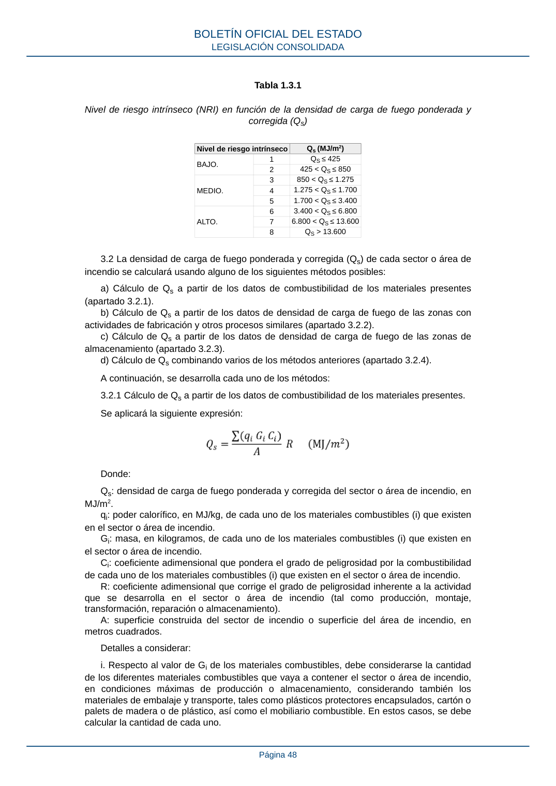

RSCIEI · edición 2025-04-10 · capa asociada
Documento RSCIEI-asociada · SHA-256 del PDF 85aa0af25d51e5b58d8975a4eefbf76d3f57a8933445cfe814ae9c4818a2e3e7
Página física 48 de 108.
Copia fiel del PDF fuente · Fuente oficial
Ficha de la disposición en la fuente oficial
Texto extraído y reorganizado: Basado en datos de la Agencia Estatal Boletín Oficial del Estado. PDF reproducido: Fuente de los datos: Agencia Estatal Boletín Oficial del Estado.
Formato: Texto de la página (Markdown)
Tabla 1.3.1 Nivel de riesgo intrínseco (NRI) en función de la densidad de carga de fuego ponderada y corregida (Qs) Nivel de riesgo intrínseco Qs (MJ/m2) BAJO. 1 QS ≤ 425 2 425 < QS ≤ 850 MEDIO. 3 850 < QS ≤ 1.275 4 1.275 < QS ≤ 1.700 5 1.700 < QS ≤ 3.400 ALTO. 6 3.400 < QS ≤ 6.800 7 6.800 < QS ≤ 13.600 8 QS > 13.600 3.2 La densidad de carga de fuego ponderada y corregida (Qs) de cada sector o área de incendio se calculará usando alguno de los siguientes métodos posibles: a) Cálculo de Qs a partir de los datos de combustibilidad de los materiales presentes (apartado 3.2.1). b) Cálculo de Qs a partir de los datos de densidad de carga de fuego de las zonas con actividades de fabricación y otros procesos similares (apartado 3.2.2). c) Cálculo de Qs a partir de los datos de densidad de carga de fuego de las zonas de almacenamiento (apartado 3.2.3). d) Cálculo de Qs combinando varios de los métodos anteriores (apartado 3.2.4). A continuación, se desarrolla cada uno de los métodos: 3.2.1 Cálculo de Qs a partir de los datos de combustibilidad de los materiales presentes. Se aplicará la siguiente expresión: Donde: Qs: densidad de carga de fuego ponderada y corregida del sector o área de incendio, en MJ/m2. qi: poder calorífico, en MJ/kg, de cada uno de los materiales combustibles (i) que existen en el sector o área de incendio. Gi: masa, en kilogramos, de cada uno de los materiales combustibles (i) que existen en el sector o área de incendio. Ci: coeficiente adimensional que pondera el grado de peligrosidad por la combustibilidad de cada uno de los materiales combustibles (i) que existen en el sector o área de incendio. R: coeficiente adimensional que corrige el grado de peligrosidad inherente a la actividad que se desarrolla en el sector o área de incendio (tal como producción, montaje, transformación, reparación o almacenamiento). A: superficie construida del sector de incendio o superficie del área de incendio, en metros cuadrados. Detalles a considerar: i. Respecto al valor de Gi de los materiales combustibles, debe considerarse la cantidad de los diferentes materiales combustibles que vaya a contener el sector o área de incendio, en condiciones máximas de producción o almacenamiento, considerando también los materiales de embalaje y transporte, tales como plásticos protectores encapsulados, cartón o palets de madera o de plástico, así como el mobiliario combustible. En estos casos, se debe calcular la cantidad de cada uno. BOLETÍN OFICIAL DEL ESTADO LEGISLACIÓN CONSOLIDADA Página 48

Datos candidatos: compruebe celdas y notas en el PDF.